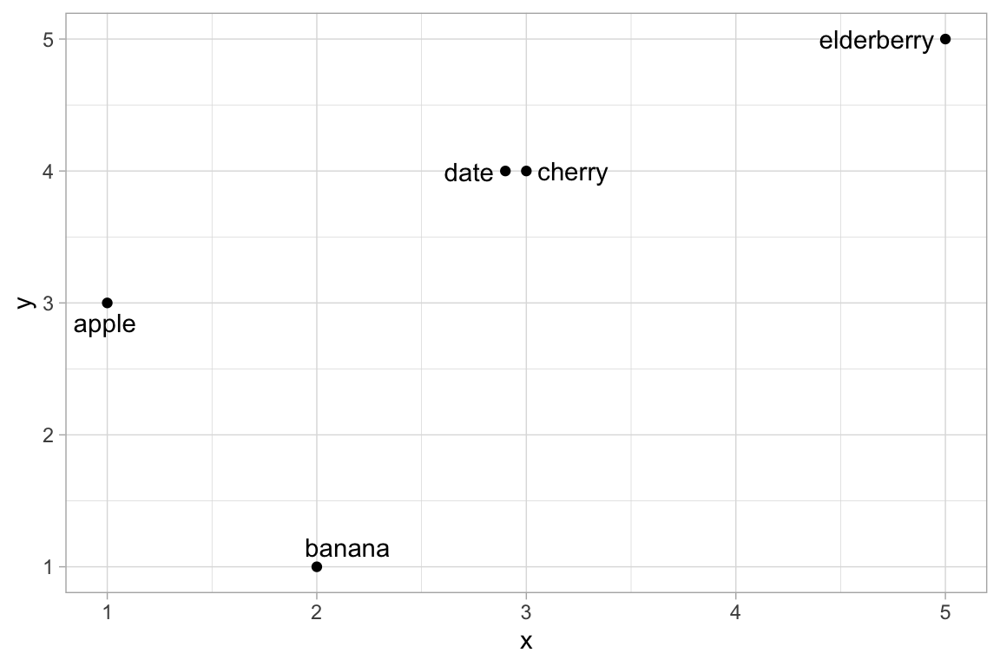
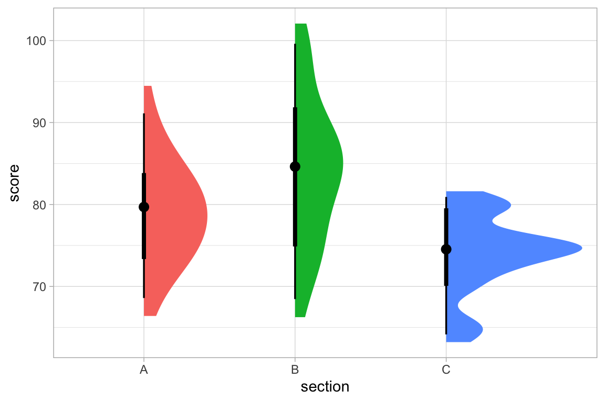

ggformula_spec(gf_point) |> str()
#> List of 11
#> $ geom : chr "point"
#> $ stat : chr "identity"
#> $ position : chr "identity"
#> $ aes_form :Class 'formula' language y ~ x
#> .. ..- attr(*, ".Environment")=<environment: 0xb818c0d98>
#> $ extras :List of 7
#> ..$ alpha : symbol
#> ..$ color : symbol
#> ..$ size : symbol
#> ..$ shape : symbol
#> ..$ fill : symbol
#> ..$ group : symbol
#> ..$ stroke: symbol
#> $ pre : language { }
#> ..- attr(*, "srcref")=List of 1
#> .. ..$ : 'srcref' int [1:8] 376 11 376 11 11 11 983 983
#> .. .. ..- attr(*, "srcfile")=Classes 'srcfilealias', 'srcfile' <environment: 0xb81cb4f90>
#> ..- attr(*, "srcfile")=Classes 'srcfilealias', 'srcfile' <environment: 0xb81cb4f90>
#> ..- attr(*, "wholeSrcref")= 'srcref' int [1:8] 1 0 376 12 0 12 1 983
#> .. ..- attr(*, "srcfile")=Classes 'srcfilealias', 'srcfile' <environment: 0xb81cb4f90>
#> $ aesthetics : <ggplot2::mapping> Named list()
#> $ inherit.aes : logi TRUE
#> $ check.aes : logi TRUE
#> $ required_packages : chr(0)
#> $ installed_packages: chr(0)Every gf_* function in ggformula – gf_point(), gf_boxplot(), gf_ribbon(), and around a hundred more – is built by a single function factory, layer_factory(). This vignette explains how that factory works well enough that you can use it to add your own gf_* wrapper around a geom/stat from another package, and walks through two worked examples: labeling points without overlap using ggrepel, and half-eye/raincloud-style distribution plots using ggdist.
You do not need to be a ggformula developer to follow along – this is meant for anyone who wants a formula-based wrapper around a geom or stat that ggformula doesn’t already provide.
How layer_factory() works
Every gf_* function is created by calling layer_factory() or interactive_layer_factory() with a small set of arguments describing the geom, stat, and position being wrapped. Here, roughly, is how gf_point() is created inside ggformula itself:1
gf_point <-
layer_factory(
geom = "point",
stat = "identity", # default value
position = "identity", # default value
aes_form = y ~ x, # default value
extras = alist(
alpha = , color = , size = , shape = , fill = , group = , stroke = )
)The important arguments are:
-
geom/stat/position– the geom, stat, and position to use, given either as strings (e.g."point", which resolves toGeomPoint) or as actual objects/functions. -
aes_form– a formula, or a list of formulas, describing the formula shape(s) the function accepts. It defaults toy ~ x, which is whygf_point(mpg ~ wt, data = mtcars)mapswttoxandmpgtoy. Some functions allow more than one shape –gf_ribbon(), for example, useslist(ymin + ymax ~ x, y ~ xmin + xmax). -
extras– analist()of additional arguments the function should accept, with defaults where relevant (an empty default, as inalpha =, means “no default; only include this if the user supplies it”). Each of these can be set (color = "red") or mapped (color = ~species) when the function is called. It is not required that every possible argument be listed here, but the list should include any arguments that will be given a different default value and any that you want listed in the short documentation provided when agf_function is called with no arguments. -
layer_fun– the function ultimately used to build the layer. This defaults toggplot2::layer(), which is the right choice whengeom/statname registeredGeom*/Stat*ggproto objects. If you instead want to reuse an existing high-level constructor function (likeggrepel::geom_text_repel()orggdist::stat_halfeye()) rather than re-implementing its logic, you pointlayer_funat that function instead – more on this below.
You can inspect the arguments any existing gf_* function was built with via ggformula_spec():
Three arguments not demonstrated in this example may be important, especially when using stats and geoms from packages other than ggplot2:
-
required_packages– a character vector of package names that must be installed and attached (vialibrary()) for the function to work. If any are missing, the user gets an informative error before anything else runs – more on this below. -
installed_packages– likerequired_packages, but only checks that each package is installed, not that it’s attached. This may be the right choice whenlayer_funcalls the extension package’s own function directly (viapkg::fun()), since that often doesn’t require the package to be attached – more on this below. -
pre– R code to run after checking for required/installed packages. In earlier versions ofggformula, this was used to check for packages, butrequired_packagesandinstalled_packagesare preferred for that purpose now, butpreremains for cases where other code needs to be executed before continuing with the standardlayer_factory()processing. Seegf_text()as an example.
ggformula_spec(gf_text) |> getElement('pre')
#> {
#> if ((nudge_x != 0) || (nudge_y != 0)) {
#> position <- position_nudge(nudge_x, nudge_y)
#> }
#> }Two patterns for wrapping a new geom or stat
There are two ways to plug an extension package’s geom or stat into layer_factory(), and which one you want depends on how that package exposes its functionality.
Pattern 1: Point at the registered ggproto object by name
If the extension package registers a Stat*/Geom* ggproto object (most ggplot2 extension packages do), you can use the low-level geom =/stat = arguments. This is how ggformula defines gf_sina() as a wrapper around ggforce’s sina-plot jitter, for example:
gf_sina <-
layer_factory(
required_packages = "ggforce",
geom = "point",
stat = "sina",
position = "identity",
extras = alist(alpha = , color = , size = , fill = , group = )
)Because this pattern resolves stat = "sina" to StatSina by searching the attached packages (not just installed ones), the extension package must be loaded with library(), not merely installed, for this to work. required_packages = "ggforce" checks exactly that – both that ggforce is installed and that it’s currently attached – and raises an actionable error otherwise, such as:
To use gf_sina(), the ggforce package must be loaded.
Try, for example, `library(ggforce)`.required_packages is checked before anything else runs, including pre, so you don’t need to write this check by hand the way earlier versions of gf_sina() did.
Pattern 2: Wrap an existing constructor function
Many extension packages expose their functionality only (or best) through a full constructor function – like ggplot2::geom_abline(), ggrepel::geom_text_repel(), or ggdist::stat_halfeye() – rather than through a bare ggproto object you’re expected to assemble yourself. In that case, point layer_fun at that function directly, and set geom/stat to a string with the same name (no geom_/stat_ prefix) purely so that layer_factory() can look up that function’s own formals to figure out which extra arguments to allow:
gf_abline <-
layer_factory(
geom = "abline",
aes_form = NULL,
extras =
alist(slope = , intercept = , color = , linetype = , linewidth = , alpha = ),
inherit.aes = FALSE,
data = NA,
layer_fun = rlang::quo(ggplot2::geom_abline)
)Because Pattern 2 calls the extension package’s function directly, the package may only need to be installed, not attached, in which case we can use installed_packages (rather than required_packages) to check for that. gf_sf(), which wraps ggplot2::geom_sf(), is a simple example:
gf_sf <-
layer_factory(
layer_fun = quo(ggplot2::geom_sf),
installed_packages = "sf",
geom = "sf",
stat = "sf",
position = "identity",
aes_form = list(NULL),
extras = alist(alpha = , color = , fill = , group = , linetype = , linewidth = , geometry = )
)This is the pattern used for both examples below.
Example: labeling points without overlap with {ggrepel}
ggrepel provides geom_text_repel() and geom_label_repel(), drop-in replacements for ggplot2::geom_text()/ geom_label() that nudge overlapping labels apart. ggformula already has gf_text() and gf_label(); here’s a gf_text_repel() built the same way, but pointed at ggrepel::geom_text_repel().
library(ggrepel)
gf_text_repel <-
layer_factory(
geom = "text_repel",
layer_fun = rlang::quo(ggrepel::geom_text_repel),
extras = alist(
label = ,
alpha = ,
color = ,
size = ,
fontface = ,
family = ,
box.padding = 0.25,
point.padding = 1e-06,
min.segment.length = 0.5,
max.overlaps = 10,
nudge_x = 0,
nudge_y = 0,
seed = NA,
direction = "both"
)
)A few things to note:
-
geom = "text_repel"doesn’t correspond to a realGeom*object; it’s only used to fetchformals(geom_text_repel)so those argument names (box.padding,max.overlaps, etc.) are recognized automatically, in addition to the ones listed explicitly inextras. - Because of this,
layer_funis required here and tellsggformulawhere to locate the function used to create a plot layer. -
aes_formwas left at its default,y ~ x, which is exactly what we want here. -
labelis listed inextraswith no default, the same waygf_text()handles it, so it can be set (label = "winner") or mapped (label = ~name).
Using it looks just like using gf_text():
df <- data.frame(
x = c(1, 2, 3, 2.9, 5),
y = c(3, 1, 4, 4, 5),
name = c("apple", "banana", "cherry", "date", "elderberry")
)
gf_point(y ~ x, data = df) |>
gf_text_repel(y ~ x, label = ~name, seed = 1234)
Compare that to gf_text(), which lets the labels overlap or spill off of the graphic:
Example: half-eye plots with {ggdist}
ggdist provides “raincloud”-style stat_halfeye(), which draws a half-violin density alongside a point estimate and one or more uncertainty intervals – a richer alternative to gf_violin()/gf_boxplot(). stat_halfeye() is itself a high-level constructor (its default geom is "slabinterval"), so this again uses Pattern 2.
library(ggdist)
#>
#> Attaching package: 'ggdist'
#> The following objects are masked from 'package:ggridges':
#>
#> scale_point_color_continuous, scale_point_color_discrete,
#> scale_point_colour_continuous, scale_point_colour_discrete,
#> scale_point_fill_continuous, scale_point_fill_discrete,
#> scale_point_size_continuous
gf_halfeye <-
layer_factory(
geom = "slabinterval",
stat = "halfeye",
layer_fun = rlang::quo(ggdist::stat_halfeye),
extras = alist(
fill = ,
color = ,
alpha = ,
adjust = 1,
point_interval = "median_qi",
.width = c(0.66, 0.95),
side = "top",
justification = NULL
)
)Setting stat = "halfeye" here means layer_factory() looks up formals(stat_halfeye) itself (since stat_halfeye() is both the constructor we’re calling and the thing we’re using to discover valid arguments), which automatically permits arguments like point_interval, .width, density, and breaks without having to list every one of them in extras.
set.seed(202)
scores <- data.frame(
section = rep(c("A", "B", "C"), each = 30),
score = c(rnorm(30, 78, 6), rnorm(30, 82, 9), rnorm(30, 75, 5))
)
gf_halfeye(score ~ section, data = scores, fill = ~section, show.legend = FALSE)
stat_halfeye() sets its own default of show.legend = c(size = FALSE) when called directly, to avoid an unwanted legend for its point-size aesthetic; because layer_factory()-built functions always pass an explicit show.legend through to layer_fun (NA by default), that sensible default gets overridden. Passing show.legend = FALSE explicitly, as above, avoids the stray legend entry.
Wrapping interactive geoms from ggiraph
If you’d like an _interactive counterpart of your new function (for use with gf_girafe()), you generally don’t need to do anything extra: interactive_layer_factory() builds one automatically from any function’s ggformula_spec(), as long as ggiraph provides an interactive version of the same geom (e.g. ggiraph::geom_text_repel_interactive()). See vignette("interactive-graphics") for more on interactive plots in general.
Tips and things to watch for
Attach vs. install. If you use Pattern 1 (a bare
geom =/stat =name), the extension package must be attached withlibrary(), not merely installed, becauseggplot2resolves those names by searching attached namespaces. Userequired_packagesto enforce this, as in thegf_sina()example above. Pattern 2 (layer_fun =) doesn’t have this restriction, since you’re calling the extension’s function directly;installed_packagesmay be sufficient, as in thegf_sf()example above, to check only that the package is installed. In general, if you can get by without attaching a package, that is preferable.check.aes. By default,layer_factory()warns if you supply an aesthetic that isn’t among the geom’s/stat’s known aesthetics. Setcheck.aes = FALSEif you need to pass an aesthetic thatlayer_factory()can’t discover automatically (this is rarely necessary if you list the relevant names inextras).prefor other guardrails. Thepreargument lets you run arbitrary code before the layer is built – useful for small argument-massaging steps like thenudge_x/nudge_yhandling used internally bygf_text(). You will typically want to surround your code with curly braces:{ }.required_packagesandinstalled_packagesare always checked first, beforepreruns.Testing.
ggformula’s own test suite usesvdiffr::expect_doppelganger()(wrapped aswrapped_expect_doppelganger()internally) to catch unintended rendering changes; the same approach works well for testing a new wrapper you’ve written.Some packages use
ggplot2in “non-standard” ways. Rather than creating and exporting new Stats or Geoms and correspondingstat_andgeom_functions and followingggplot2’s general grammar of graphics approach, they follow some other convention and provide functions that use the information provided to construct aggplot2plot in some other way.ggformulais not designed to work with packages of this type.
Further reading
-
?layer_factoryfor the full list of arguments. -
?ggformula_specfor introspecting existinggf_*functions. -
vignette("ggformula")for the base formula syntax that everygf_*function (including ones you build yourself) inherits for free.